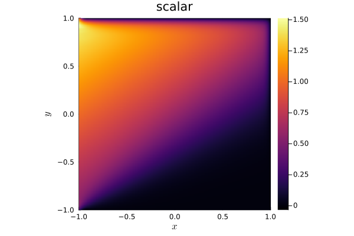

13: Parabolic terms


Experimental support for parabolic diffusion terms is available in Trixi.jl. This demo illustrates parabolic terms for the advection-diffusion equation.
using OrdinaryDiffEqLowStorageRKusing TrixiSplitting a system into hyperbolic and parabolic parts
For a mixed hyperbolic-parabolic system, we represent the hyperbolic and parabolic parts of the system separately. We first define the hyperbolic (advection) part of the advection-diffusion equation.
advection_velocity = (1.5, 1.0)equations_hyperbolic = LinearScalarAdvectionEquation2D(advection_velocity);Next, we define the parabolic diffusion term. The constructor requires knowledge of equations_hyperbolic to be passed in because the LaplaceDiffusion2D applies diffusion to every variable of the hyperbolic system.
diffusivity = 5.0e-2equations_parabolic = LaplaceDiffusion2D(diffusivity, equations_hyperbolic);Boundary conditions
As with the equations, we define boundary conditions separately for the hyperbolic and parabolic part of the system. For this example, we impose inflow BCs for the hyperbolic system (no condition is imposed on the outflow), and we impose Dirichlet boundary conditions for the parabolic equations. Both BoundaryConditionDirichlet and BoundaryConditionNeumann are defined for LaplaceDiffusion2D.
The hyperbolic and parabolic boundary conditions are assumed to be consistent with each other.
boundary_condition_zero_dirichlet = BoundaryConditionDirichlet((x, t, equations) -> SVector(0.0))boundary_conditions_hyperbolic = (; x_neg = BoundaryConditionDirichlet((x, t, equations) -> SVector(1 + 0.5 * x[2])), y_neg = boundary_condition_zero_dirichlet, y_pos = boundary_condition_do_nothing, x_pos = boundary_condition_do_nothing)boundary_conditions_parabolic = (; x_neg = BoundaryConditionDirichlet((x, t, equations) -> SVector(1 + 0.5 * x[2])), y_neg = boundary_condition_zero_dirichlet, y_pos = boundary_condition_zero_dirichlet, x_pos = boundary_condition_zero_dirichlet);Defining the solver and mesh
The process of creating the DG solver and mesh is the same as for a purely hyperbolic system of equations.
solver = DGSEM(polydeg = 3, surface_flux = flux_lax_friedrichs)coordinates_min = (-1.0, -1.0) # minimum coordinates (min(x), min(y))coordinates_max = (1.0, 1.0) # maximum coordinates (max(x), max(y))mesh = TreeMesh(coordinates_min, coordinates_max, initial_refinement_level = 4, periodicity = false)initial_condition = (x, t, equations) -> SVector(0.0);Semidiscretizing and solving
To semidiscretize a hyperbolic-parabolic system, we create a SemidiscretizationHyperbolicParabolic. This differs from a SemidiscretizationHyperbolic in that we pass in a Tuple containing both the hyperbolic and parabolic equation, as well as a Tuple containing the hyperbolic and parabolic boundary conditions.
semi = SemidiscretizationHyperbolicParabolic(mesh, (equations_hyperbolic, equations_parabolic), initial_condition, solver; boundary_conditions = (boundary_conditions_hyperbolic, boundary_conditions_parabolic))┌──────────────────────────────────────────────────────────────────────────────────────────────────┐
│ SemidiscretizationHyperbolicParabolic │
│ ═════════════════════════════════════ │
│ #spatial dimensions: ……………………………………… 2 │
│ mesh: ……………………………………………………………………………… TreeMesh{2, Trixi.SerialTree{2, Float64}} with length 341 │
│ hyperbolic equations: …………………………………… LinearScalarAdvectionEquation2D │
│ parabolic equations: ……………………………………… LaplaceDiffusion2D │
│ initial condition: …………………………………………… #7 │
│ source terms: ………………………………………………………… nothing │
│ source terms parabolic: ……………………………… nothing │
│ solver: ………………………………………………………………………… DG │
│ parabolic solver: ……………………………………………… ParabolicFormulationBassiRebay1 │
│ total #DOFs per field: ………………………………… 4096 │
└──────────────────────────────────────────────────────────────────────────────────────────────────┘The rest of the code is identical to the hyperbolic case. We create a system of ODEs through semidiscretize, defining callbacks, and then passing the system to OrdinaryDiffEq.jl.
tspan = (0.0, 1.5)ode = semidiscretize(semi, tspan)callbacks = CallbackSet(SummaryCallback())time_int_tol = 1.0e-6sol = solve(ode, RDPK3SpFSAL49(); abstol = time_int_tol, reltol = time_int_tol, ode_default_options()..., callback = callbacks);
████████╗██████╗ ██╗██╗ ██╗██╗
╚══██╔══╝██╔══██╗██║╚██╗██╔╝██║
██║ ██████╔╝██║ ╚███╔╝ ██║
██║ ██╔══██╗██║ ██╔██╗ ██║
██║ ██║ ██║██║██╔╝ ██╗██║
╚═╝ ╚═╝ ╚═╝╚═╝╚═╝ ╚═╝╚═╝
┌──────────────────────────────────────────────────────────────────────────────────────────────────┐
│ SemidiscretizationHyperbolicParabolic │
│ ═════════════════════════════════════ │
│ #spatial dimensions: ……………………………………… 2 │
│ mesh: ……………………………………………………………………………… TreeMesh{2, Trixi.SerialTree{2, Float64}} with length 341 │
│ hyperbolic equations: …………………………………… LinearScalarAdvectionEquation2D │
│ parabolic equations: ……………………………………… LaplaceDiffusion2D │
│ initial condition: …………………………………………… #7 │
│ source terms: ………………………………………………………… nothing │
│ source terms parabolic: ……………………………… nothing │
│ solver: ………………………………………………………………………… DG │
│ parabolic solver: ……………………………………………… ParabolicFormulationBassiRebay1 │
│ total #DOFs per field: ………………………………… 4096 │
└──────────────────────────────────────────────────────────────────────────────────────────────────┘
┌──────────────────────────────────────────────────────────────────────────────────────────────────┐
│ TreeMesh{2, Trixi.SerialTree{2, Float64}} │
│ ═════════════════════════════════════════ │
│ center: ………………………………………………………………………… [0.0, 0.0] │
│ length: ………………………………………………………………………… 2.0 │
│ periodicity: …………………………………………………………… (false, false) │
│ current #cells: …………………………………………………… 341 │
│ #leaf-cells: …………………………………………………………… 256 │
│ current capacity: ……………………………………………… 341 │
└──────────────────────────────────────────────────────────────────────────────────────────────────┘
┌──────────────────────────────────────────────────────────────────────────────────────────────────┐
│ LinearScalarAdvectionEquation2D │
│ ═══════════════════════════════ │
│ #variables: ……………………………………………………………… 1 │
│ │ variable 1: ………………………………………………………… scalar │
└──────────────────────────────────────────────────────────────────────────────────────────────────┘
┌──────────────────────────────────────────────────────────────────────────────────────────────────┐
│ DG{Float64} │
│ ═══════════ │
│ basis: …………………………………………………………………………… LobattoLegendreBasis{Float64}(polydeg=3) │
│ mortar: ………………………………………………………………………… LobattoLegendreMortarL2{Float64}(polydeg=3) │
│ surface integral: ……………………………………………… SurfaceIntegralWeakForm │
│ │ surface flux: …………………………………………………… FluxLaxFriedrichs(max_abs_speed) │
│ volume integral: ………………………………………………… VolumeIntegralWeakForm │
└──────────────────────────────────────────────────────────────────────────────────────────────────┘
┌──────────────────────────────────────────────────────────────────────────────────────────────────┐
│ Time integration │
│ ════════════════ │
│ Start time: ……………………………………………………………… 0.0 │
│ Final time: ……………………………………………………………… 1.5 │
│ time integrator: ………………………………………………… RDPK3SpFSAL49 │
│ adaptive: …………………………………………………………………… true │
│ abstol: ………………………………………………………………………… 1.0e-6 │
│ reltol: ………………………………………………………………………… 1.0e-6 │
│ controller: ……………………………………………………………… PIDController(beta=(0.38, -0.…er=default_dt_factor_limiter) │
└──────────────────────────────────────────────────────────────────────────────────────────────────┘
┌──────────────────────────────────────────────────────────────────────────────────────────────────┐
│ Environment information │
│ ═══════════════════════ │
│ #threads: …………………………………………………………………… 1 │
│ threading backend: …………………………………………… polyester │
└──────────────────────────────────────────────────────────────────────────────────────────────────┘
Trixi.jl
───────────────────────────────────────────────────────────────────────────────────────────
Time Allocations
────────────────────── ────────────────────────
Tot / % measured: 297ms / 98.0% 115KiB / 9.8%
───────────────────────────────────── ────────────────────── ────────────────────────
Section ncalls time %tot avg alloc %tot avg
───────────────────────────────────────────────────────────────────────────────────────────
parabolic rhs! 1.20k 213ms 73.3% 178μs 7.19KiB 64.0% 6.13B
├─ calculate gradient 1.20k 98.4ms 33.8% 82.0μs 2.62KiB 23.4% 2.24B
│ ├─ volume integral 1.20k 61.4ms 21.1% 51.2μs ∅ ∅ ∅
│ ├─ Jacobian 1.20k 10.2ms 3.5% 8.53μs ∅ ∅ ∅
│ ├─ surface integral 1.20k 8.56ms 2.9% 7.13μs ∅ ∅ ∅
│ ├─ prolong2interfaces 1.20k 7.10ms 2.4% 5.92μs ∅ ∅ ∅
│ ├─ interface flux 1.20k 6.49ms 2.2% 5.41μs ∅ ∅ ∅
│ ├─ reset gradients 1.20k 1.36ms 0.5% 1.14μs ∅ ∅ ∅
│ ├─ ~calculate gradient~ 1.20k 1.35ms 0.5% 1.12μs 2.62KiB 23.4% 2.24B
│ ├─ prolong2boundaries 1.20k 950μs 0.3% 792ns ∅ ∅ ∅
│ ├─ boundary flux 1.20k 805μs 0.3% 671ns ∅ ∅ ∅
│ ├─ prolong2mortars 1.20k 75.5μs 0.0% 62.9ns ∅ ∅ ∅
│ └─ mortar flux 1.20k 54.6μs 0.0% 45.5ns ∅ ∅ ∅
├─ volume integral 1.20k 53.9ms 18.5% 44.9μs ∅ ∅ ∅
├─ calculate parabolic fluxes 1.20k 31.2ms 10.7% 26.0μs ∅ ∅ ∅
├─ prolong2interfaces 1.20k 7.72ms 2.7% 6.43μs ∅ ∅ ∅
├─ transform variables 1.20k 6.79ms 2.3% 5.66μs ∅ ∅ ∅
├─ interface flux 1.20k 6.37ms 2.2% 5.31μs ∅ ∅ ∅
├─ surface integral 1.20k 3.67ms 1.3% 3.06μs ∅ ∅ ∅
├─ ~parabolic rhs!~ 1.20k 1.91ms 0.7% 1.59μs 4.56KiB 40.6% 3.89B
├─ boundary flux 1.20k 1000μs 0.3% 833ns ∅ ∅ ∅
├─ prolong2boundaries 1.20k 858μs 0.3% 715ns ∅ ∅ ∅
├─ Jacobian 1.20k 741μs 0.3% 617ns ∅ ∅ ∅
├─ reset ∂u/∂t 1.20k 539μs 0.2% 449ns ∅ ∅ ∅
├─ prolong2mortars 1.20k 67.3μs 0.0% 56.1ns ∅ ∅ ∅
├─ mortar flux 1.20k 58.0μs 0.0% 48.3ns ∅ ∅ ∅
└─ source terms parabolic 1.20k 37.2μs 0.0% 31.0ns ∅ ∅ ∅
rhs_hyperbolic! 1.20k 77.7ms 26.7% 64.7μs 4.05KiB 36.0% 3.45B
├─ volume integral 1.20k 53.1ms 18.2% 44.2μs ∅ ∅ ∅
├─ interface flux 1.20k 12.1ms 4.2% 10.1μs ∅ ∅ ∅
├─ prolong2interfaces 1.20k 3.97ms 1.4% 3.31μs ∅ ∅ ∅
├─ surface integral 1.20k 3.77ms 1.3% 3.14μs ∅ ∅ ∅
├─ boundary flux 1.20k 1.47ms 0.5% 1.22μs ∅ ∅ ∅
├─ ~rhs_hyperbolic!~ 1.20k 1.39ms 0.5% 1.16μs 4.05KiB 36.0% 3.45B
├─ Jacobian 1.20k 684μs 0.2% 570ns ∅ ∅ ∅
├─ prolong2boundaries 1.20k 529μs 0.2% 441ns ∅ ∅ ∅
├─ reset ∂u/∂t 1.20k 517μs 0.2% 431ns ∅ ∅ ∅
├─ mortar flux 1.20k 64.2μs 0.0% 53.5ns ∅ ∅ ∅
├─ prolong2mortars 1.20k 60.9μs 0.0% 50.7ns ∅ ∅ ∅
└─ source terms 1.20k 37.5μs 0.0% 31.2ns ∅ ∅ ∅
───────────────────────────────────────────────────────────────────────────────────────────We can now visualize the solution, which develops a boundary layer at the outflow boundaries.
using Plotsplot(sol)
Package versions
These results were obtained using the following versions.
using InteractiveUtilsversioninfo()using PkgPkg.status(["Trixi", "OrdinaryDiffEqLowStorageRK", "Plots"], mode = PKGMODE_MANIFEST)Julia Version 1.10.12
Commit d93beab124c (2026-08-15 10:29 UTC)
Build Info:
Official https://julialang.org/ release
Platform Info:
OS: Linux (x86_64-linux-gnu)
CPU: 4 × AMD EPYC 9V74 80-Core Processor
WORD_SIZE: 64
LIBM: libopenlibm
LLVM: libLLVM-15.0.7 (ORCJIT, znver3)
Threads: 1 default, 0 interactive, 1 GC (on 4 virtual cores)
Environment:
JULIA_PKG_SERVER_REGISTRY_PREFERENCE = eager
Status `~/work/Trixi.jl/Trixi.jl/docs/Manifest.toml`
[b0944070] OrdinaryDiffEqLowStorageRK v3.3.0
[91a5bcdd] Plots v1.41.6
[a7f1ee26] Trixi v0.17.3 `~/work/Trixi.jl/Trixi.jl`This page was generated using Literate.jl.